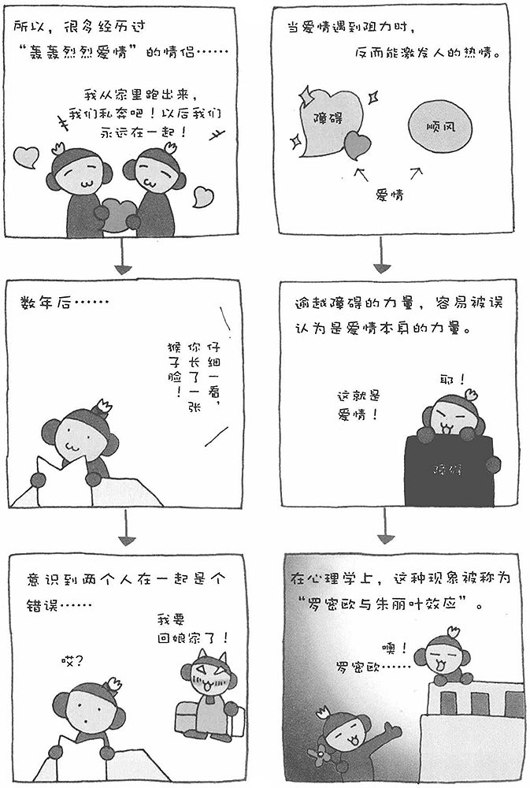

首先，我要为大家介绍人类有趣的行为和心理。其中，特别要提到恋爱，恋爱可以引发很多不可思议的心理效应。比如，相恋的男女，当遇到外界的阻力时，反而会促成他们的姻缘。一般情况下，我们会认为门当户对、没有任何阻力、受到周围人祝福的爱情才会发展得比较顺利。实际上，越是受到外界的阻力，比如双方父母的强烈反对，越能加深恋人之间的感情。在电视剧中，我们经常会看到这样的情节：当有别人追求自己的恋爱对象时，即出现情敌时，自己对恋爱对象的感情会变得更加强烈。在心理学上，这种现象被称为"罗密欧与朱丽叶效应"。
《罗密欧与朱丽叶》是莎士比亚的一部戏剧。故事发生在十四世纪意大利的两个积怨很深、相互争斗的家族之间。两个家族的独生子和独生女罗密欧与朱丽叶相恋了，他们的爱情受到多方阻挠，但两个年轻人决心冲破重重障碍，将忠贞的爱情轰轰烈烈地进行到底。双方的家人越是反对，两个人的心贴得越紧。
当彼此相爱的两个人遇到障碍、不得不分手时，人会产生一种"不协和感"（不快感）。此时，要消除这种"不协和感"的心理效应就开始起作用。由于人的心理无法改变外界障碍的现状，于是加深感情以逾越障碍。此外，人们还会产生错觉，把战胜困难的力量误认为是爱情的力量，把逾越障碍的成就感转换为恋爱的感情。
很多为了躲避家人的反对而私奔的情侣，在别人眼中他们演绎的是"轰轰烈烈的爱情"，但出人意料的是，这样成就的婚姻很多最终都走向了离婚。受外界阻力而激发升温的爱情，往往经受不住悲伤的考验。两个人一旦遇到悲伤的挫折，爱情就容易产生裂痕。
